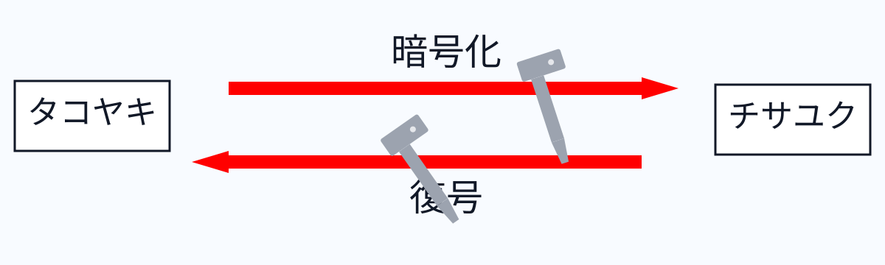
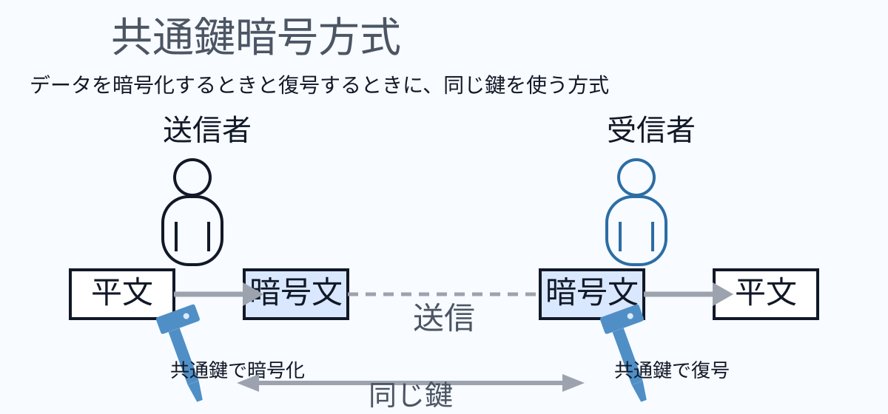
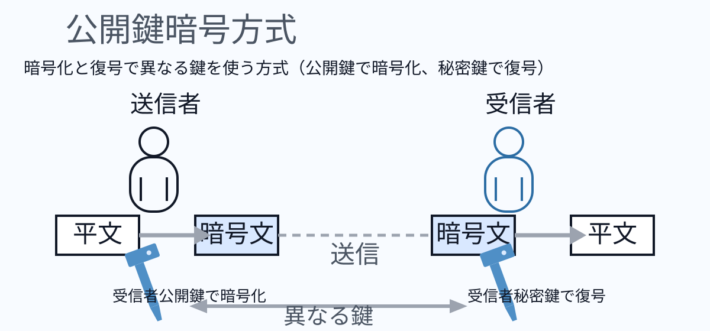

暗号技术（暗号技術）
本页集中整理加密与解密相关基础概念。
暗号技术知识点
什么是加密？
加密是把明文通过算法与密钥转换为难以理解的密文；复号则使用对应密钥还原为明文。图示例子可理解为“文字按一定规则位移”，算法是“文字位移”，密钥是“位移量（如 1 个字符）”。

共通键加密方式（对称加密）
共通键加密（对称加密）是指加密与复号都使用同一把密钥。发送方用共享密钥把明文转为密文，接收方用同一密钥把密文还原为明文。

优点
结构简单、运算负担小，因此加解密处理速度快。
缺点
- 初次通信需要安全地把共通键传给对方；若密钥在传递时泄露，后续通信可能被窃听。
- 通信对象越多，所需管理的密钥对数量越多，密钥管理复杂度上升。
这些缺点通常由“公开键方式（非对称加密）”来补足。
公开键加密方式（非对称加密）
公开键加密是在加密与复号时使用不同密钥的方式。发送者使用接收者的公开键加密，接收者使用自己持有的秘密键复号。
在公开键方式中，接收方预先生成“公开键 + 秘密键”配对：公开键发给发送方用于加密，秘密键仅由接收方保管用于复号。公开键不能用于复号。

优点
- 即使公开键被截获也问题不大，因为无法据此直接推出秘密键。
- 可以把同一公开键分发给多个发送方，密钥分发管理更容易。
缺点
与共通键方式相比算法更复杂，计算开销更高，处理速度通常更慢。
所需密钥数量（规模比较）
当 n 个成员两两通信时，共通键方式需要 n(n-1)/2 把密钥；公开键方式需要 2n 把密钥。成员数量增长后，共通键的密钥管理复杂度上升更快。
- 解题思路：先确定“每个通信关系是否需要独立密钥”。
- 共通键方式：任意两人一组共用一把密钥，组合数为 C(n,2)=n(n-1)/2。
- 公开键方式：每人各有“公开键+秘密键”各一把，所以总键数为 2n。
- 代入例题 n=10：共通键 10×9/2=45，把；公开键 2×10=20，把。
- 结论：人数越多，共通键增长近似二次方，公开键线性增长，后者更利于大规模管理。
为什么 C(n,2)=n(n-1)/2？
- 先按“有顺序”数二人组：第 1 人有 n 种选法，第 2 人有 n-1 种，所以共有 n(n-1) 对。
- 但通信对 (A,B) 与 (B,A) 是同一对，被重复计算了 2 次。
- 因此要除以 2 去重：n(n-1)/2。
- 这正是组合数定义：C(n,2)=n!/(2!(n-2)!)=n(n-1)/2。
AES
AES（Advanced Encryption Standard）是广泛使用的共通键分组加密算法。标准分组长度为 128 bit，密钥长度常见 128/192/256 bit。其速度快、强度高，常用于网络通信与无线加密等场景。
RSA 加密
RSA 是典型公开键加密算法，安全性依赖“大整数素因数分解困难性”。常见于 HTTPS、数字签名与密钥交换。名称来源于 Rivest、Shamir、Adleman 三位提出者姓氏首字母。
混合加密方式（Hybrid）
混合加密结合了共通键与公开键两类方式的优点：初次仅用公开键方式安全传输“会话共通键”，后续数据通信改用共通键方式进行高速加密。
CRYPTREC 密码清单
CRYPTREC 是“密码技术评估委员会”的相关项目，由总务省、经济产业省与 IPA 等机构协同推进。其公开的推荐算法清单常作为政府机构与企业选型参考，常见包括 AES、RSA、SHA-256 等。
危殆化（安全性劣化）
在密码技术中，危殆化是指原本被认为足够安全的算法，随着算力提升或分析方法进步而更容易被破解，导致实际安全强度下降到不再可用的状态。